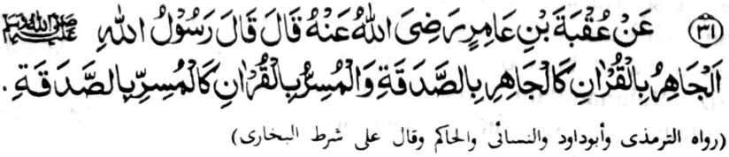

Miyakathitayan ko ‘Uqbah bin Amir (Radhiallaho ‘Anho) a pitharo iyan a pitharo o Rasulollah (Sallallaho ‘Alaihi wa Sallam), “So kipakatanogen ko kabatiya sa Qur’an na lagid o gi-i zadka sa marayag, go sa tao a maipes-i kabatiya sa Qur’an na lagid o tao a gi-i zadka sa pagenes.”
Pekhasalak a mala-i balas so kazadka sa mapayag, igira aden a mapiya sabap ago aya ni-at na so ka-oyati ko manga ped a nggolalan sa ladiyawan. Si-i peman ko ped a masa, na so kazadka sa pagenes na taralebi a mala-i balas, ibarat, igira sanggila ko kapaki-ilay-lain si-i ko phamemegay, go kapaka-ito ko mbegan.
Lagidoto mambo, so kabatiya sa Qur’an sa matanog na mala-i balas igira ipephangoyat ko manga ped; go isa on pen na aden a balas o manga tao a pephakanegon. Aden mambo a pekhato-on a masa a taralebi so kabatiya sa maipes, ka aden kalidasi so kaphakabowing iyan ko manga ped a tao ago aden kalidasi so kapaki-ilay-lain ko pembatiya. Apiya anda san a okit, na so kabatiya na salakao a balas iyan. Aden a pekhasalak a taralebi so isa a okit (ma-ana so maipes), na aden mambo a masa a taralebi angkoto a ika dowa a okit.
Madakel a manga tao a aya da-owa iran a makaphapasod sangka-iya a Hadith na so kabatiya sa pagenes na taralebi a mala-i balas. So Imam Baihaqi (Rahmatullahi ‘Alaihi), na si-i ko kitab iyan a ‘Kitab-ush-Shu’ab’, na inisorat iyan a so Hadrat A’isha (Radhiallaho ‘Anha) na miyapanothol iyan a so balas o kanggalebek sa ‘amal a pagenes na pito-polo takep a kapakalelebi niyan ko balas o ‘amal a mapayag. Ogaid, na so bitikan a ibebetad o manga Muhaddithin (Manga Olama ko Hadith), na giyangka-iya a Hadith na dha’if (malobay).
Lagidoto a aden mambo a miyapanothol a pando-an o Rasulollah (Sallallaho ‘Alaihi wa Sallam) ko kapembatiya-a ko Qur’an sa matanog.
Si-i ko ‘Sharah-ul-Ihya’ na madadalemon so dowa a ‘Riwayaat’ (manga tothol) ago ‘athar’ [manga katharo o manga Sahabah] a ipezogo iyan so kabatiya sa Qur’an sa odi matanog na pagenes.